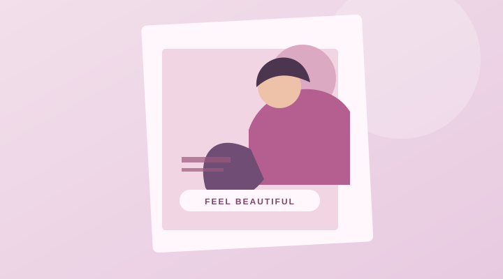
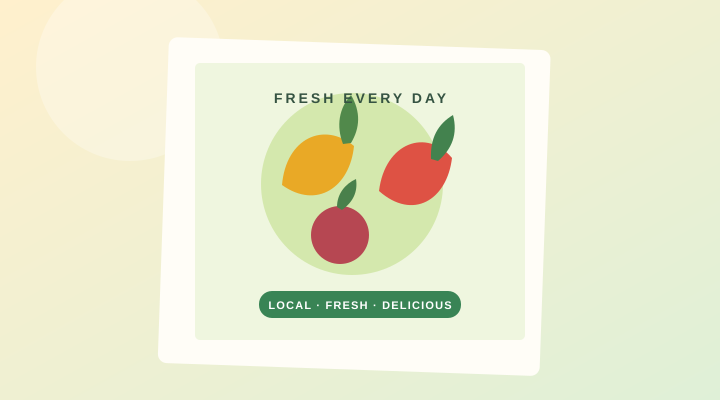

HTML
Semantic page structure
Learning
SECOND-YEAR STUDENT · OPEN TO OPPORTUNITIES
Information Systems & Knowledge Management Student
I’m learning to connect people, information, and technology — and turning that curiosity into practical digital solutions, one project at a time.
A LITTLE ABOUT ME
I’m Vera, an Information Systems and Knowledge Management student with a growing interest in how technology can make everyday work simpler and smarter.
My studies bring together business, people, data, and technology. I enjoy exploring how information systems are designed, how databases organize what we know, and how clear digital experiences can help people get things done.
Through coursework and personal projects, I’m developing practical skills in web development, databases, analysis, and visual communication. I’m eager to keep learning and contribute to useful, thoughtfully designed solutions.
My goal is to grow into an information systems professional who can understand real-world needs and help shape reliable, user-friendly digital solutions.
MY TOOLKIT
A growing toolkit shaped by my studies, projects, and plenty of curiosity. I’m always working to improve.
Semantic page structure
Responsive layouts & styling
Interactive web fundamentals
Programming fundamentals
Object-oriented concepts
Programming & OOP basics
Queries & relational data
Data organization & design
Interpreting information
Word, Excel & PowerPoint
Simple, clear visual content
Systems in business contexts
Understanding needs & workflows
Progress indicators are a self-assessment and are intentionally modest. Replace them as your experience grows.
SELECTED WORK
A selection of coursework and creative work. These are starting points—swap in your live project and repository links whenever you’re ready.
A friendly storefront concept for browsing pharmacy products and finding essential store information.
An online shopping experience concept for exploring electronics through a clean product layout.
A responsive portfolio to introduce my interests, share my projects, and make it easy to get in touch.
A learning project exploring how to structure, relate, and retrieve information in a database.

05A promotional poster concept designed to present salon services with a clear, inviting visual style.

06A bright advertising concept to help a local fruit vendor showcase fresh produce and attract customers.
Project buttons currently lead to the contact section because project URLs have not been provided. Add your real URLs in index.html.
HOW I CAN HELP
I’m building experience in these areas and am happy to discuss student projects or opportunities within my current skill level.
Simple, responsive websites built with core web technologies.
Let’s talkFoundational database organization and relational design support.
Let’s talkCareful organization and handling of everyday information.
Let’s talkClean posters and simple promotional content using Canva.
Let’s talkThoughtful basic visuals and content support for social channels.
Let’s talkStudent-level assistance with system workflows and documentation.
Let’s talkMY EDUCATION
A foundation in understanding how people, organizations, and technology work together.
[Institution Name]
Second-year student exploring information systems, knowledge management, business processes, databases, and digital solutions.
index.html.LET’S CONNECT
I’d love to hear from you. Whether it’s an opportunity, a collaboration, or just a hello, send me a message.